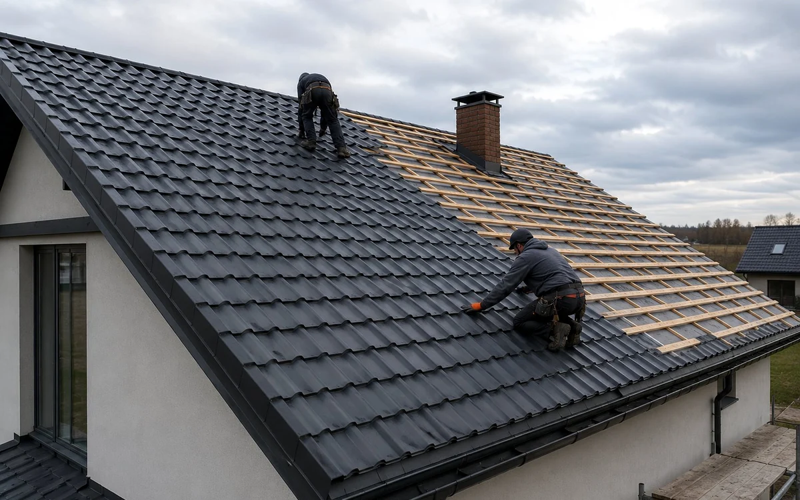

На реальном объекте такую задачу оценивают по нескольким связанным элементам кровли. Нужно увидеть, как связаны покрытие, основание, примыкания и путь воды.
Где материал работает хорошо
Удобнее всего применять металлочерепицу на простых скатах с достаточным уклоном и понятной схемой водоотведения.
Что важно в основании
Шаг обрешётки должен соответствовать профилю листа. Под покрытием нужны мембрана, контробрешётка и вентиляционный зазор.
- геометрию скатов
- шаг обрешётки
- состояние мембраны
- вентиляционный зазор
- места резки и крепления
Слабые места системы
Проблемы чаще возникают возле ендов, труб, карнизов и в местах резки. Повреждённый защитный слой металла нужно обрабатывать сразу.
Ошибки, которых стоит избегать
- саморезы вне нужной зоны волны
- резка абразивным кругом
- отсутствие контробрешётки
- слишком сильная затяжка крепежа
Локальное исправление имеет смысл только после того, как понятно, где начинается проблема и не затрагивает ли она соседние слои.
Когда стоит рассмотреть другой вариант
На сложных крышах с короткими скатами и большим количеством узлов отходов становится больше, а риск ошибок растёт.
Частые вопросы
Шумит ли металлочерепица во время дождя?
Уровень шума зависит от конструкции крыши, утепления и качества крепления. Пустая неутеплённая кровля звучит иначе, чем утеплённая.
Можно ли монтировать металлочерепицу на старую обрешётку?
Только после проверки её шага, ровности и состояния древесины.
Материал проверен на основе практики с 2017 года
METROPLEX работает в сфере малоэтажного строительства, проектирования и кровельных решений. В материале описаны общие принципы. Окончательное решение принимается после анализа конструкции конкретного объекта.